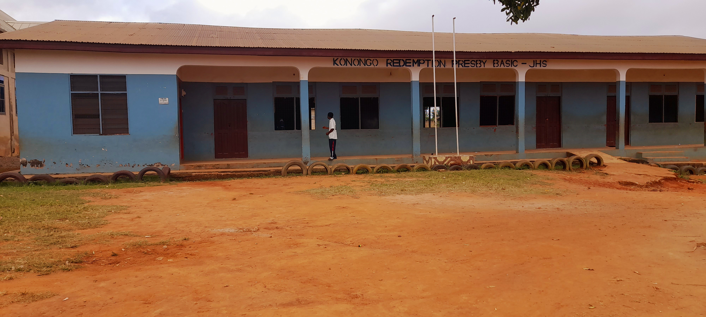
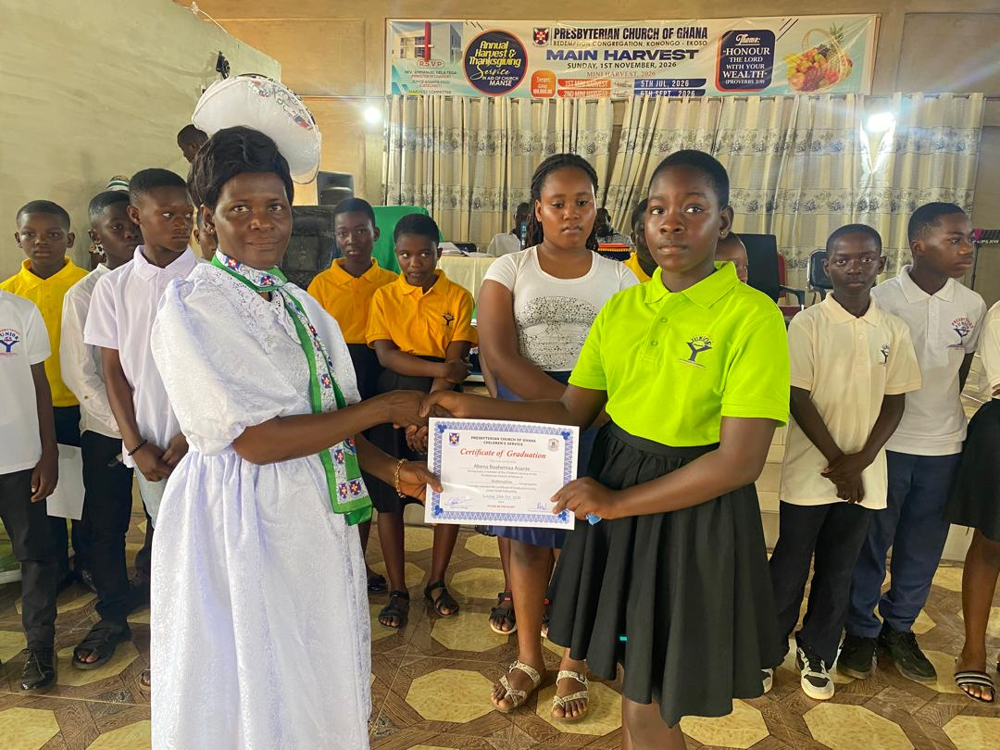

KONONGO REDEMPTION
PRESBY BASIC
MOTTO:
FORWARD EVER BACKWARDS NEVER

MOTTO:
FORWARD EVER BACKWARDS NEVER
Konongo Redemption Presby Basic, is one of the best schools in the Abosomtweagya circuit. This School was established in the year 2012. And is located in Asante Akyem Central, Konongo Akratei Besa near Dabi Asaem Hotel. This School has four main departments, these are Nursery, Kindergarten, Primary and Junior High School. This School is the leading School in the circuit in terms of Academic performance, Sporting Activities and population. This School has around seven hundred students and thirty-five teaching staff. Our current headmistress is Madam Asante Joyce Kissi and assisted by Mr. Agyei Ansah.
The J.H.S Block
The Primary Block

The Head Mistress
